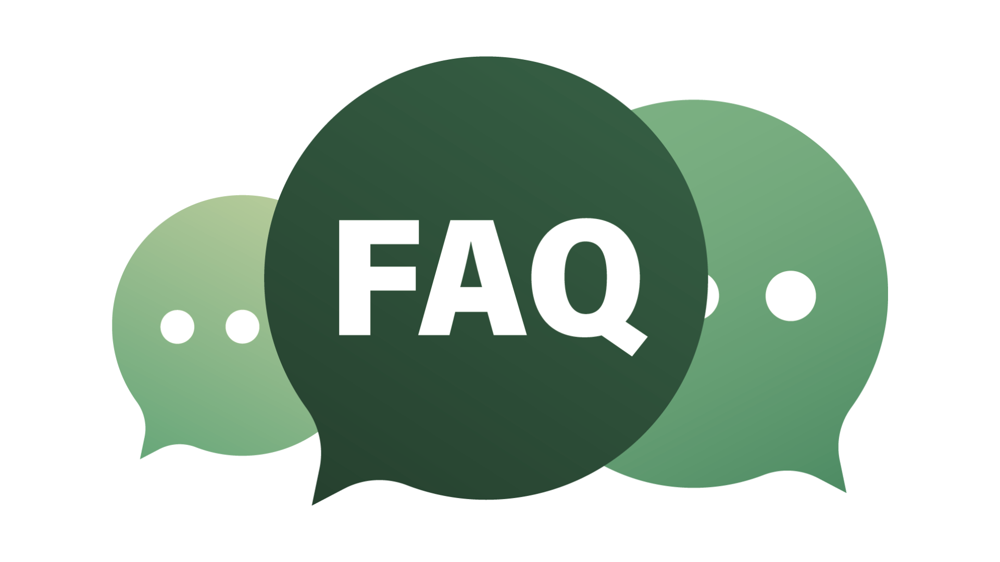
A: pH shows how alkaline or acidic a liquid is. pH 12.5 means the solution is strongly alkaline — effective at removing grease and grime but not safe to drink. Handle according to instructions and avoid ingestion or prolonged skin contact.
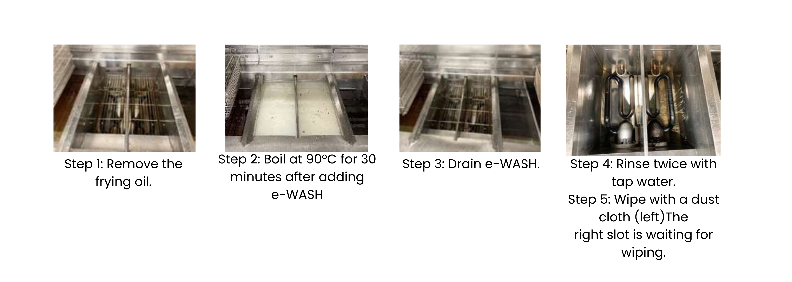
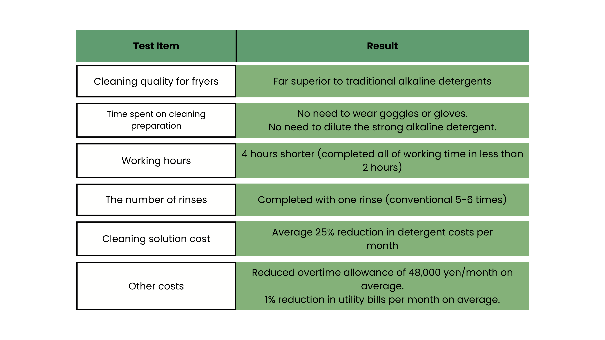
A1: Because 99.83% of pure water.
A2: Since it is water, there is no risk of fire or explosion during storage.
A3: Contains zero hazardous chemicals.
A4: "Free from chemical burns and inflammation" if you use e-WASH as it is.
A5: No need to worry about acute alcohol poisoning.
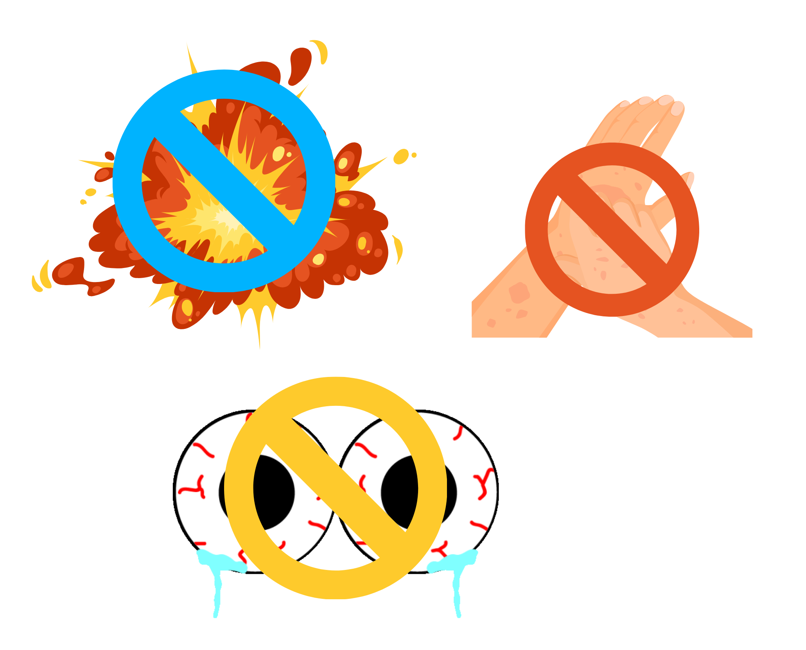
A1: A third party organization conducted a test and confirmed that it is a "safe product" without any problems even if the skin is in contact with e-WASH for 24 hours. This test is called the closed patch test.
A2: It has been confirmed by a third-party test that e-WASH does "not cause stinging" when it touches the skin.
A: This is because we had a third-party test and confirmed that e-WASH "does not pose a problem if it gets into your eyes." This test is called the eye irritation test.
A: We conducted a test at a third-party institution and confirmed that e-WASH can be humidified and inhaled into the lungs without any problems. This test is called an acute inhalation toxicity test.
A: e-WASH does not directly cure hypersensitivity. There is a specific example of an 11-year-old boy's symptoms being alleviated by using e-WASH in various scenes in his life. It is speculated that this was due to the fact that he was not exposed to any chemical allergens.
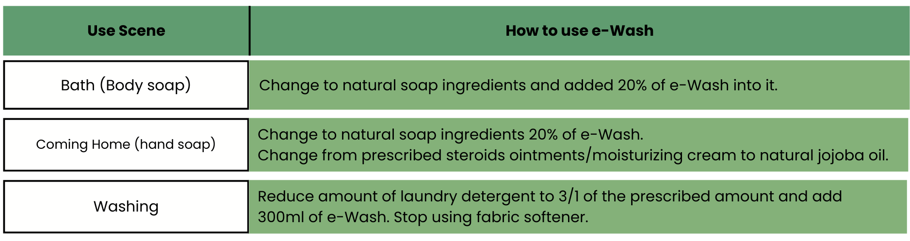
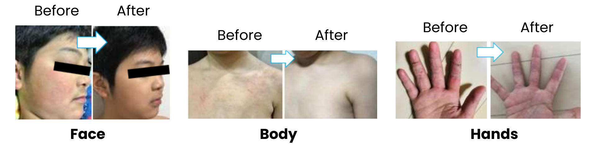
A1: Cutting off the source of anaerobic odor is considered the first preventive measure. e-WASH is useful for physically removing grease and dirt, which are the sources of anaerobic odors.
A2: Chemically reducing odors such as ammonia and hydrogen sulfide help prevent anaerobic odors.
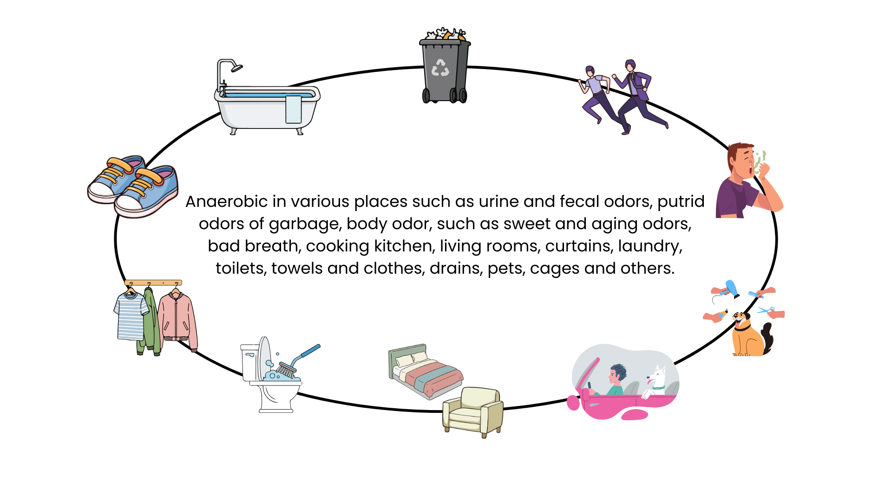
A: By using e-WASH every day at home, in your working spaces, and everywhere you can clean and disinfect around you.
A1: The most important thing is to focus on removing dirt with e-WASH. As a result of these activities, please be sure that it is possible to disinfect at the same time.
A2: Since 99.83% pure strong alkaline ionized water is used, it can be easily used by babies, children, the elderly, and households with pets.
A: It has been proven by third-party organizations that it is effective against the pathogenic bacteria and viruses listed below.
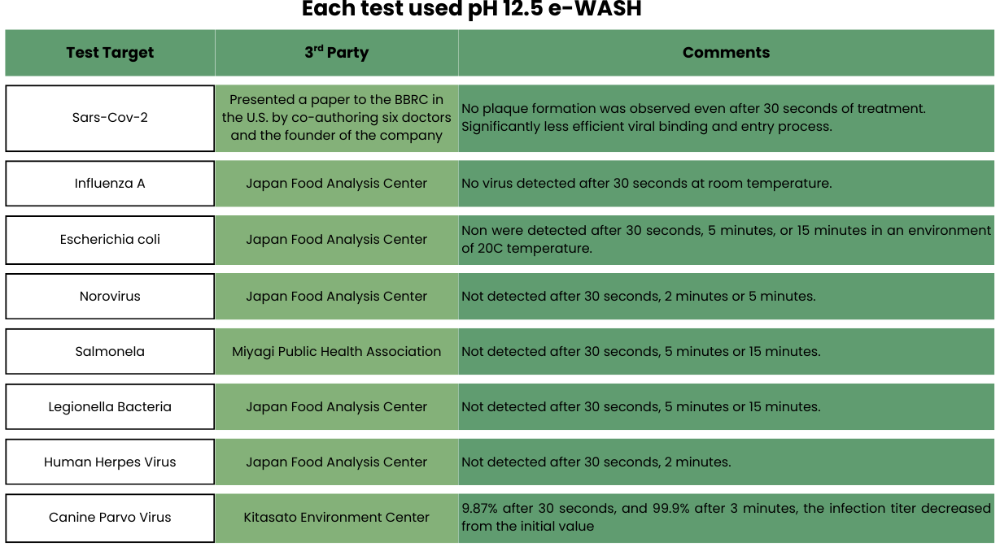
A: It depends on the comparison with the current situation. We recommend that you compare at least the following three points:
- Point 1. Compare the price and usage of your current cleaner.
- Point 2. Labor time comparison.
- Point 3. Cleaning quality comparison.
Please define indicators and thresholds to decide whether to completely replace existing cleaning agents with e-WASH or to use them together.
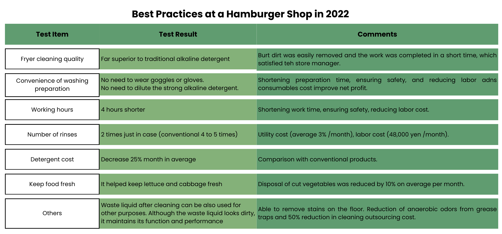
A1: e-WASH gives environmental protection and peace of mind to everybody.
A2: A happy memory of the campsite by cleaning dishes and cooking utensils with e-WASH.
A3: Removes stains and pesticides on fruits in orchards.
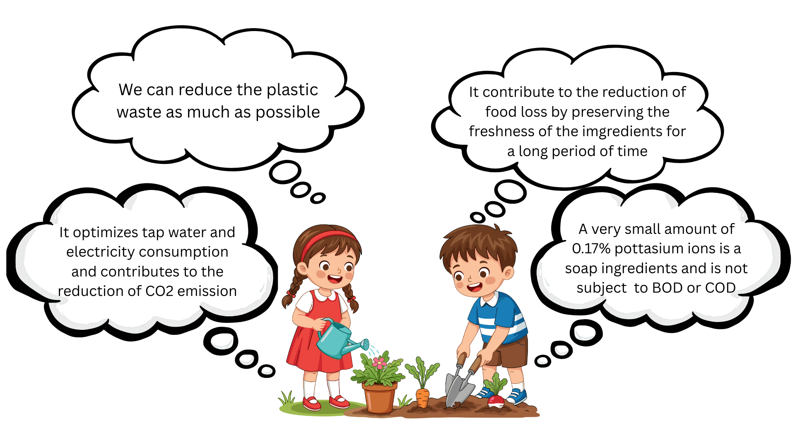
- BOD is biochemical oxygen demand. It is the amount of oxygen used by microorganisms to eat dirt (organic matter). It is used as a guide to check the pollution of the river.
- COD stands for chemical oxygen demand. It is a standard for checking the same dirt as BOD, but it uses chemicals instead of microorganisms to check the amount of oxygen used in the water.
A1: You don't need any special skills to remove stains because e-WASH can penetrate and break down various stains. Therefore, "anyone can remove dirt easily and quickly" from objects "without specific skills".
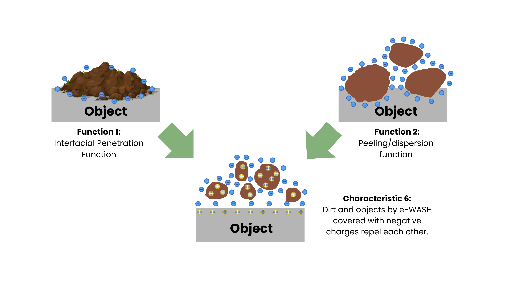
A2: e-WASH is a multi-purpose cleaner that can be used in a wide range of applications. You will be freed from the trouble of choosing a cleaner for each type of dirt. This allows anyone to achieve great work efficiency.
A3: No special experience is required for finishing because we do not use petroleum-derived synthetic surfactants that are difficult to wash off with water.
A4: By emulsifying, separating, and dispersing, dirt such as oil, dirt, and soil can easily flow together with water.
A5: 99.83% is pure water, so anyone can easily wipe it off.
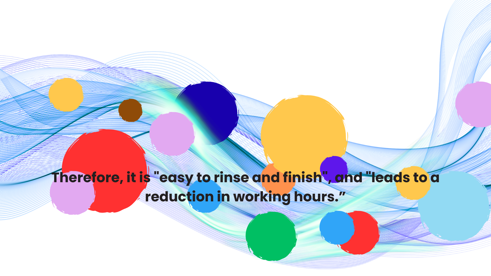
A: When used as directed, e-WASH is safe for cleaning. It is produced by electrolysis and contains a very small amount of alkaline component in mostly water, not by adding harsh chemicals. Avoid prolonged skin contact and seek medical advice if irritation occurs.
A: e-WASH is a strong alkaline cleaning solution (around pH 12.5) made for cleaning and disinfection. Drinking alkaline ionized water (pH ~9–10) is milder and intended for consumption. e-WASH is not designed to be drunk.
A: A small accidental lick is unlikely to cause harm, but e-WASH is not for ingestion. If swallowed, rinse the mouth with water and consult a doctor if you notice any symptoms. Keep the product away from children and pets.
A: Yes — e-WASH breaks the bond between dirt and surfaces, lifting and suspending soils so they rinse away easily. It works well at room temperature and can be heated for tougher oil and grease jobs, often replacing harsher detergents.
A: When used properly, e-WASH is environmentally friendly and does not significantly pollute waterways. It contains only trace dissolved ions. For large volumes of oily wastewater, separate and dispose of oil appropriately and follow local discharge rules.
A: No — e-WASH is water-based, not a volatile solvent, so it does not contribute to air pollution or greenhouse gas emissions during normal use. Always follow recommended usage and disposal guidelines to minimize any indirect environmental impacts.